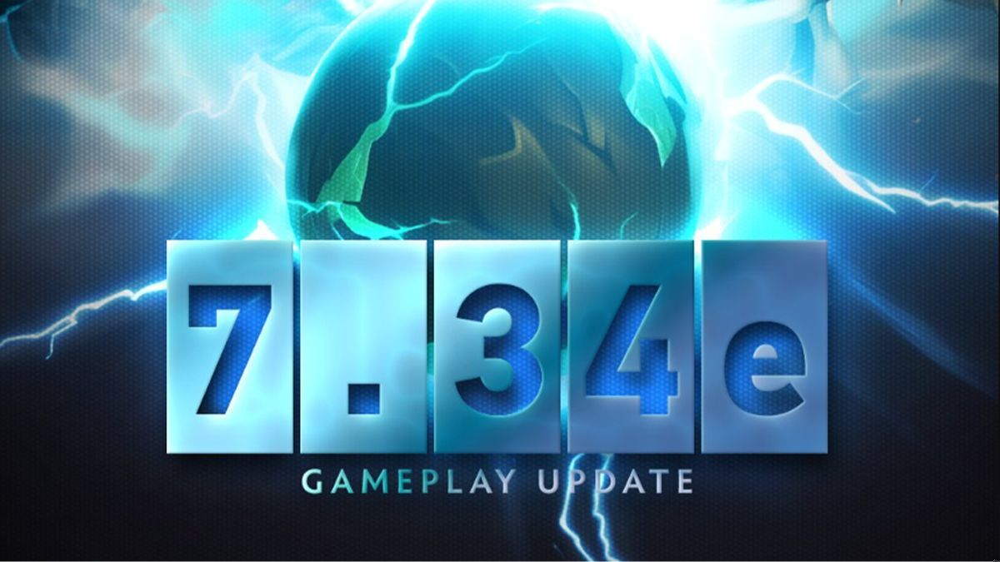

The Legacy of Faker Faker's journey to becoming the face of League of Legends began in 2013 when he joined the powerhouse South Korean team, SK Telecom T1. Since then, Faker has become synonymous with excellence, dominating the mid lane with unparalleled skill and a strategic mind that has left opponents in awe. His influence extends beyond the game, making him a true icon and an inspiration for aspiring esports professionals.
The 2023 World Championship The 2023 World Championship was the stage for Faker to further solidify his legacy. The stakes were high as SK Telecom T1 entered the tournament with the ambition of reclaiming the Summoner's Cup. Faker, now a seasoned veteran, led a roster of talented teammates, each eager to etch their mark in the history books. The Journey to Glory The tournament was a rollercoaster of emotions for both players and fans alike. SK Telecom T1 faced formidable opponents from regions across the globe, with each match bringing new challenges and intense competition. Faker's strategic brilliance and unmatched mechanics were on full display, as he orchestrated plays that left commentators and spectators in awe.
One of the defining moments came in the semifinals, where SK Telecom T1 faced off against a fierce rival. In a nail-biting series, Faker's prowess became the guiding light for his team, showcasing the resilience and determination that had defined his career. The victory propelled SK Telecom T1 to the grand finals, setting the stage for a historic clash. The Grand Final In the finals, SK Telecom T1 faced an equally formidable opponent, creating an atmosphere charged with anticipation. Faker's composure under pressure and his ability to adapt to the evolving meta became instrumental in securing victory for his team. The grand finale was not just a battle for supremacy; it was a testament to Faker's enduring legacy and the culmination of years of hard work and dedication.
As the final Nexus fell, confetti rained down on Faker and his teammates, marking their triumphant return to the pinnacle of League of Legends. The 2023 World Championship was not just a tournament victory; it was a celebration of Faker's unparalleled career and a reminder of his lasting impact on the esports world. The Ending of Worlds 2023 As the final Nexus shattered and the confetti rained down, the world stood witness to more than just a triumphant victory at the 2023 World Championship. In that moment, the cheers of fans echoing through the arena were not just for SK Telecom T1; they were a resounding ovation for the indomitable spirit of Lee "Faker" Sang-hyeok.
The weight of years of dedication, sacrifice, and unyielding perseverance lifted from Faker's shoulders as he stood on the grand stage, holding the Summoner's Cup aloft. The glint in his eyes told a story of countless hours of practice, heart-wrenching defeats, and the unrelenting pursuit of excellence. It was a story of a player who had become a legend not just for his skill but for the unwavering passion that fueled his every move.

Leviatán comes out of Superdome as Kings!
Leviatán have conquered Bogotá's Superdome: 2023 event flawlessly following a 3-0 victory over FURIA in the grand final.
Go to Article!
Mezii on Vitality role
William "mezii" Merriman is finally set to make his debut for the team.
Go to Article!EG and GG Have left the LCS
More bad news for the LCS as Evil Geniuses and Golden Guardians have left the franchise.
Go to Article!

Dota 2 7.34e patch notes!
A dissapointing patch on Dota brings only slight nerfs to overpowered heroes! Frostvius is hinted in December.
Go to Article!